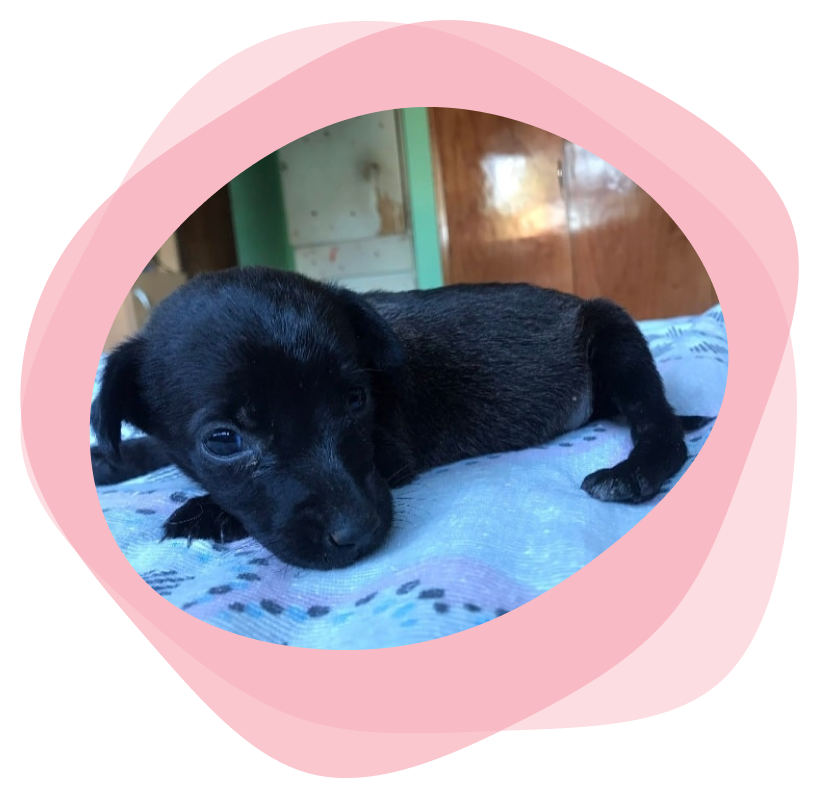

<div class="content">
  <div class="row">
    <div class="col-sm-4 col-lg-6 order-first">
      
    </div>
    <div class="col-sm-8 col-lg-6">
      <h1>Plan sanitario</h1>
      A demás de amor nuestros animales necesitan cuidado y protección, algunos
      tips para ello son:<br />
      Desparasitar a los perros y gatos desde los 20 días de vida, y luego
      periódicamente según recomendación veterinaria.<br />
      Realizar las vacunas pertinentes: quintuples o sextuples, a partir de los
      45 días de vida con revacunacion anual.<br />
      Triple felina a los gatos a partir de los 2 meses de edad con revacunacion
      anual y antirrábica a partir de los 3 meses de edad, con revacunacion
      anual.<br />
      También es importante el uso de pipetas y collares repelentes para
      prevenir transmisiones de leishmaniasis u otras enfermedades.<br />
      El maltrato animal no solo contempla penas sino además multas.
      Establecidas en la ordenanza N 12.
    </div>
  </div>
</div>
